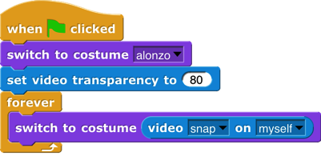
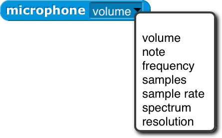
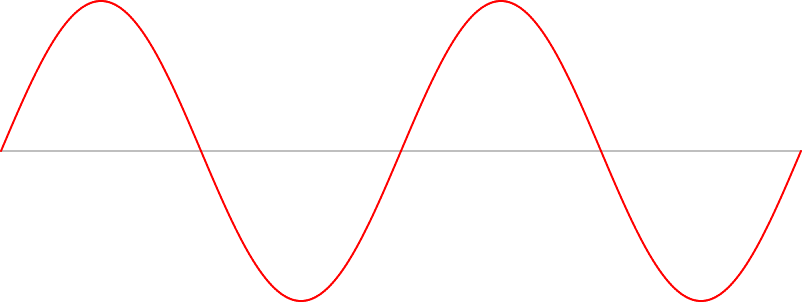
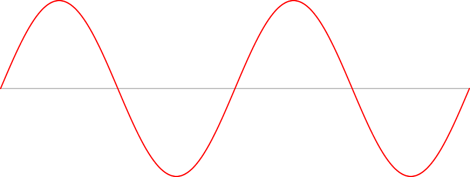

8 Object Oriented Programming with Sprites
Object oriented programming is a style based around the abstraction object: a collection of data and methods (procedures, which from our point of view are just more data) that you interact with by sending it a message (just a name, maybe in the form of a text string, and perhaps additional inputs). The object responds to the message by carrying out a method, which may or may not report a value back to the asker. Some people emphasize the data hiding aspect of OOP (because each object has local variables that other objects can access only by sending request messages to the owning object) while others emphasize the simulation aspect (in which each object abstractly represents something in the world, and the interactions of objects in the program model real interactions of real people or things). Data hiding is important for large multi-programmer industrial projects, but for Snap! users it’s the simulation aspect that’s important. Our approach is therefore less restrictive than that of some other OOP languages; we give objects easy access to each others’ data and methods.
Technically, object oriented programming rests on three legs: (1) Message passing: There is a notation by which any object can send a message to another object. (2) Local state: Each object can remember the important past history of the computation it has performed. (“Important” means that it need not remember every message it has handled, but only the lasting effects of those messages that will affect later computation.) (3) Inheritance: It would be impractical if each individual object had to contain methods, many of them identical to those of other objects, for all of the messages it can accept. Instead, we need a way to say that this new object is just like that old object except for a few differences, so that only those differences need be programmed explicitly.
First Class Sprites
Like Scratch, Snap! comes with things that are natural objects: its sprites . Each sprite can own local variables; each sprite has its own scripts (methods). A Scratch animation is plainly a simulation of the interaction of characters in a play. There are two ways in which Scratch sprites are less versatile than the objects of an OOP language. First, Scratch message passing is weak in three respects: Messages can only be broadcast , not addressed to an individual sprite; messages can’t take inputs; and methods can’t return values to their caller. Second, and more basic, in the OOP paradigm objects are data; they can be the value of a variable, an element of a list, and so on, but that’s not the case for Scratch sprites.
Snap! sprites are first class data. They can be created and deleted by a script, stored in a variable or list, and sent messages individually. The children of a sprite can inherit sprite-local variables, methods (sprite-local procedures), and other attributes (e.g., x position).


 The fundamental means by which programs get access to sprites is the my reporter block . It has a dropdown-menu input slot that, when clicked, gives access to all the sprites, plus the stage . reports a single sprite, the one asking the question. reports a list of all sprites other than the one asking the question. reports a list of all sprites that are near the one asking—the ones that are candidates for having collided with this one, for example. The my block has many other options, discussed below. If you know the name of a particular sprite, the object reporter will report the sprite itself.
The fundamental means by which programs get access to sprites is the my reporter block . It has a dropdown-menu input slot that, when clicked, gives access to all the sprites, plus the stage . reports a single sprite, the one asking the question. reports a list of all sprites other than the one asking the question. reports a list of all sprites that are near the one asking—the ones that are candidates for having collided with this one, for example. The my block has many other options, discussed below. If you know the name of a particular sprite, the object reporter will report the sprite itself.
 An object or list of objects reported by my or object can be used as input to any block that accepts any input type, such as set’s second input. If you say an object, the resulting speech balloon will contain a smaller image of the object’s costume or (for the stage) background.
An object or list of objects reported by my or object can be used as input to any block that accepts any input type, such as set’s second input. If you say an object, the resulting speech balloon will contain a smaller image of the object’s costume or (for the stage) background.
Permanent and Temporary Clones
 The block is used to create and report an instance (a clone) of any sprite. (There is also a command version, for historical reasons.) There are two different kinds of situations in which clones are used. One is that you’ve made an example sprite and, when you start the project, you want a fairly large number of essentially identical sprites that behave like the example. (Hereafter we’ll call the example sprite the “parent” and the others the “children.”) Once the game or animation is over, you don’t need the copies any more. (As we’ll see, “copies” is the wrong word because the parent and the children share a lot of properties. That’s why we use the word “clones” to describe the children rather than “copies.”) These are temporary clones . They are automatically deleted when the user presses either the green flag or the red stop sign. In Scratch 2.0 and later, all clones are temporary.
The block is used to create and report an instance (a clone) of any sprite. (There is also a command version, for historical reasons.) There are two different kinds of situations in which clones are used. One is that you’ve made an example sprite and, when you start the project, you want a fairly large number of essentially identical sprites that behave like the example. (Hereafter we’ll call the example sprite the “parent” and the others the “children.”) Once the game or animation is over, you don’t need the copies any more. (As we’ll see, “copies” is the wrong word because the parent and the children share a lot of properties. That’s why we use the word “clones” to describe the children rather than “copies.”) These are temporary clones . They are automatically deleted when the user presses either the green flag or the red stop sign. In Scratch 2.0 and later, all clones are temporary.
The other kind of situation is what happens when you want specializations of sprites. For example, let’s say you have a sprite named Dog. It has certain behaviors, such as running up to a person who comes near it. Now you decide that the family in your story really likes dogs, so they adopt a lot of them. Some are cocker spaniels, who wag their tails when they see you. Others are rottweilers, who growl at you when they see you. So you make a clone of Dog, perhaps rename it Cocker Spaniel, and give it a new costume and a script for what to do when someone gets near. You make another clone of Dog, perhaps rename it Rottweiler, and give it a new costume, etc. Then you make three clones of Cocker Spaniel (so there are four altogether) and two clones of Rottweiler. Maybe you hide the Dog sprite after all this, since it’s no breed in particular. Each dog has its own position, special behaviors, and so on. You want to save all of these dogs in the project. These are permanent clones . In BYOB 3.1, the predecessor to Snap!, all clones are permanent.
One advantage of temporary clones is that they don’t slow down Snap! even when you have a lot of them. (If you’re curious, one reason is that permanent clones appear in the sprite corral, where their pictures have to be updated to reflect the clone’s current costume, direction, and so on.) We have tried to anticipate your needs, as follows: When you make a clone in a script, using the block, it is “born” temporary. But when you make a clone from the user interface, for example by right-clicking on a sprite and choosing “clone,” it is born permanent. The reason this makes sense is that you don’t create 100 kinds of dogs automatically. Each kind has many different characteristics, programmed by hand. But when your project is running, it might create 100 rottweilers, and those will be identical unless you change them in the program.
 You can change a temporary sprite to permanent by right-clicking it and choosing “edit.” (It’s called “edit” rather than, say, “permanent” because it also shifts the scripting area to reflect that sprite, as if you’d pressed its button in the sprite corral.) You can change a permanent sprite to temporary by right-clicking it and choosing “release.” You can also change the status of a clone in your program with with true or false as the second input.
You can change a temporary sprite to permanent by right-clicking it and choosing “edit.” (It’s called “edit” rather than, say, “permanent” because it also shifts the scripting area to reflect that sprite, as if you’d pressed its button in the sprite corral.) You can change a permanent sprite to temporary by right-clicking it and choosing “release.” You can also change the status of a clone in your program with with true or false as the second input.
Sending Messages to Sprites
The messages that a sprite accepts are the blocks in its palettes, including both all-sprites and this-sprite-only blocks. (For custom blocks, the corresponding methods are the scripts as seen in the Block Editor.
The way to send a message to a sprite (or the stage) is with the tell block (for command messages) or the ask block (for reporter messages).
A small point to note in the examples above: all dropdown menus include an empty entry at the top, which can be selected for use in higher order procedures like the for each and map examples. Each of the sprites in my neighbors or my other sprites is used to fill the blank space in turn.
By the way, if you want a list of all the sprites, including this sprite, you can use either of these:
 Tell and ask wait until the other sprite has carried out its method before this sprite’s script continues. (That has to be the case for ask, since we want to do something with the value it reports.) So tell is analogous to broadcast and wait. Sometimes the other sprite’s method may take a long time, or may even be a forever loop, so you want the originating script to continue without waiting. For this purpose we have the launch block:
Tell and ask wait until the other sprite has carried out its method before this sprite’s script continues. (That has to be the case for ask, since we want to do something with the value it reports.) So tell is analogous to broadcast and wait. Sometimes the other sprite’s method may take a long time, or may even be a forever loop, so you want the originating script to continue without waiting. For this purpose we have the launch block:
Launch is analogous to broadcast without the “wait.”
Snap! 4.1, following BYOB 3.1, used an extension of the of block to provide access to other sprites’ methods. That interface was designed back when we were trying hard to avoid adding new primitive blocks; it allowed us to write ask and tell as tool procedures in Snap! itself. That technique still works, but is deprecated, because nobody understood it, and now we have the more straightforward primitives.
Polymorphism
 Suppose you have a Dog sprite with two clones CockerSpaniel and PitBull. In the Dog sprite you define this method (“For this sprite only” block ):
Suppose you have a Dog sprite with two clones CockerSpaniel and PitBull. In the Dog sprite you define this method (“For this sprite only” block ):
Note the location (map-pin) symbol before the block’s name. The symbol is not part of the block title; it’s a visual reminder that this is a sprite-local block. Sprite-local variables are similarly marked.
But you don’t define greet as friend or greet as enemy in Dog. Each kind of dog has a different behavior. Here’s what a CockerSpaniel does:
And here’s what a PitBull does:
Greet is defined in the Dog sprite. If Fido is a particular cocker spaniel, and you ask Fido to greet someone, Fido inherits the greet method from Dog, but Dog itself couldn’t actually run that method, because Dog doesn’t have greet as friend or greet as enemy. And perhaps only individual dogs such as Fido have friend? methods. Even though the greet method is defined in the Dog sprite, when it’s running it remembers what specific dog sprite called it, so it knows which greet as friend to use. Dog’s greet block is called a polymorphic method, because it means different things to different dogs, even though they all share the same script.
Local State in Sprites: Variables and Attributes
A sprite’s memory of its own past history takes two main forms. It has variables, created explicitly by the user with the “Make a variable ” button; it also has attributes, the qualities every sprite has automatically, such as position, direction, and pen color. Each variable can be examined using its own orange oval block; there is one set block to modify all variables. Attributes, however, have a less uniform programming interface in Scratch:
A sprite’s direction can be examined with the direction block, and modified with the point in direction block. It can also be modified less directly using the blocks turn, point towards, and if on edge, bounce.
There is no way for a script to examine a sprite’s pen color, but there are blocks set pen color to <color>, set pen color to <number>, and change pen color to modify it.
A sprite’s name can be neither examined nor modified by scripts; it can be modified by typing a new name directly into the box that displays the name, above the scripting area.
The block, if any, that examines a variable or attribute is called its getter; a block (there may be more than one, as in the direction example above) that modifies a variable or attribute is called a setter.
In Snap! we allow virtually all attributes to be examined. But instead of adding dozens of reporters, we use a more uniform interface for attributes: The my block ’s menu (in Sensing; see page 78) includes many of the attributes of a sprite. It serves as a general getter for those attributes, e.g., my [anchor] to find the sprite, if any, to which this sprite is attached in a nesting arrangement (see page 10). Similarly, the same set block used to set variable values allows setting some sprite attributes.
Prototyping: Parents and Children
Most current OOP languages use a class/instance approach to creating objects. A class is a particular kind of object, and an instance is an actual object of that type. For example, there might be a Dog class, and several instances Fido, Spot, and Runt. The class typically specifies the methods shared by all dogs (RollOver, SitUpAndBeg, Fetch, and so on), and the instances contain data such as species, color, and friendliness. Snap! uses a different approach called prototyping, in which there is no distinction between classes and instances. Prototyping is better suited to an experimental, tinkering style of work: You make a single dog sprite, with both methods (blocks) and data (variables); you can actually watch it and interact with it on the stage; and when you like it, you use it as the prototype from which to clone other dogs. If you later discover a bug in the behavior of dogs, you can edit a method in the parent, and all of the children will automatically share the new version of the method block. Experienced class/instance programmers may find prototyping strange at first, but it is actually a more expressive system, because you can easily simulate a class/instance hierarchy by hiding the prototype sprite! Prototyping is also a better fit with the Scratch design principle that everything in a project should be concrete and visible on the stage; in class/instance OOP the programming process begins with an abstract, invisible entity, the class, that must be designed before any concrete objects can be made.[7]
There are three ways to make a child sprite. If you control-click or right-click on a sprite in the “sprite corral” at the bottom right corner of the window, you get a menu that includes “clone” as one of the choices. There is an a new clone of block in the Control palette that creates and reports a child sprite. And sprites have a “parent” attribute that can be set, like any attribute, thereby changing the parent of an existing sprite.
Inheritance by Delegation
A clone inherits properties of its parent. “Properties” include scripts, custom blocks, variables, named lists, system attributes, costumes, and sounds. Each individual property can be shared between parent and child, or not shared (with a separate one in the child). The getter block for a shared property, in the child’s palette, is displayed in a lighter color; separate properties of the child are displayed in the traditional colors.
When a new clone is created, by default it shares only its methods, wardrobe, and jukebox with its parent. All other properties are copied to the clone, but not shared. (One exception is that a new permanent clone is given a random position. Another is that temporary clones share the scripts in their parent’s scripting area. A third is that sprite-local variables that the parent creates after cloning are shared with its children.) If the value of a shared property is changed in the parent, then the children see the new value. If the value of a shared property is changed in the child, then the sharing link is broken, and a new private version is created in that child. (This is the mechanism by which a child chooses not to share a property with its parent.) “Changed” in this context means using the set or change block for a variable, editing a block in the Block Editor, editing a costume or sound, or inserting, deleting, or reordering costumes or sounds. To change a property from unshared to shared, the child uses the inherit command block. The pulldown menu in the block lists all the things this sprite can inherit from its parent (which might be nothing, if this sprite has no parent) and is not already inheriting. But that would prevent telling a child to inherit, so if the inherit block is inside a ring, its pulldown menu includes all the things a child could inherit from this sprite. Right-clicking on the scripting area of a permanent clone gives a menu option to share the entire collection of scripts from its parent, as a temporary clone does.
The rules are full of details, but the basic idea is simple: Parents can change their children, but children can’t directly change their parents. That’s what you’d expect from the word “inherit”: the influence just goes in one direction. When a child changes some property, it’s declaring independence from its parent (with respect to that one property). What if you really want the child to be able to make a change in the parent (and therefore in itself and all its siblings)? Remember that in this system any object can tell any other object to do something:
 When a sprite gets a message for which it doesn’t have a corresponding block, the message is delegated to that sprite’s parent. When a sprite does have the corresponding block, then the message is not delegated. If the script that implements a delegated message refers to my (self), it means the child to which the message was originally sent, not the parent to which the message was delegated.
When a sprite gets a message for which it doesn’t have a corresponding block, the message is delegated to that sprite’s parent. When a sprite does have the corresponding block, then the message is not delegated. If the script that implements a delegated message refers to my (self), it means the child to which the message was originally sent, not the parent to which the message was delegated.
 List of attributes
List of attributes

 At the right is a picture of the dropdown menu of attributes in the my block.
At the right is a picture of the dropdown menu of attributes in the my block.
Several of these are not real attributes, but things related to attributes:
self : this sprite
neighbors : a list of nearby sprites[8]
other sprites : a list of all sprites except myself
stage : the stage, which is first-class, like a sprite
clones : a list of my temporary clones
other clones : a list of my temporary siblings
parts : a list of sprites whose anchor attribute is this sprite
children : a list of all my clones, temporary and permanent
The others are individual attributes:
anchor : the sprite of which I am a (nested) part
parent : the sprite of which I am a clone
temporary?: am I a temporary clone?
name : my name (same as parent’s name if I’m temporary)
costumes : a list of the sprite’s costumes
sounds : a list of the sprite’s sounds
blocks: a list of the blocks visible in this sprite
categories: a list of all the block category names
dangling? : True if I am a part and not in synchronous orbit
draggable?: True if the user can move me with the mouse
width, height, left, right, top, bottom: The width or height of my costume as seen right now, or the left, etc., edge of my bounding box, taking rotation into account.
rotation x , rotation y : when reading with my, the same as x position, y position. When set, changes the sprite’s rotation center without moving the sprite, like dragging the rotation center in the paint editor.
center x , center y : the x and y position of the center of my
bounding box, rounded off–the geometric center of the costume.
First Class Costumes and Sounds
Costumes and sounds don’t have methods, as sprites do; you can’t ask them to do things. But they are first class: you can make a list of them, put them in variables, use them as input to a procedure, and so on. My [costumes] and my [sounds] report lists of them.
Media Computation with Costumes
 The components of a costume are its name, width, height, and pixels. The block gives access to these components using its left menu. From its right menu you can choose the current costume, the Turtle costume, or any costume in the sprite’s wardrobe. Since costumes are first class, you can also drop an expression whose value is a costume, or a list of costumes, on that second input slot. (Due to a misfeature, even though you can select Turtle in the right menu, the block reports 0 for its width and height, and an empty string for the other components.) The costume’s width and height are in its standard orientation, regardless of the sprite’s current direction. (This is different from the sprite’s width and height, reported by the my block.)
The components of a costume are its name, width, height, and pixels. The block gives access to these components using its left menu. From its right menu you can choose the current costume, the Turtle costume, or any costume in the sprite’s wardrobe. Since costumes are first class, you can also drop an expression whose value is a costume, or a list of costumes, on that second input slot. (Due to a misfeature, even though you can select Turtle in the right menu, the block reports 0 for its width and height, and an empty string for the other components.) The costume’s width and height are in its standard orientation, regardless of the sprite’s current direction. (This is different from the sprite’s width and height, reported by the my block.)
But the really interesting part of a costume is its bitmap , a list of pixels. (A pixel , short for “picture element,” represents one dot on your display.) Each pixel is itself a list of four items, the red, green, and blue components of its color (in the range 0-255) and what is standardly called its “transparency ” but should be called its opacity, also in the range 0-255, in which 0 means that the pixel is invisible and 255 means that it’s fully opaque: you can’t see anything from a rearward layer at that point on the stage. (Costume pixels typically have an opacity of 0 only for points inside the bounding box of the costume but not actually part of the costume; points in the interior of a costume typically have an opacity of 255. Intermediate values appear mainly at the edge of a costume, or at sharp boundaries between colors inside the costume, where they are used to reduce “jaggies ”: the stairstep-like shape of a diagonal line displayed on an array of discrete rectangular screen coordinates. Note that the opacity of a sprite pixel is determined by combining the costume’s opacity with the sprite’s ghost effect. (The latter really is a measure of transparency: 0 means opaque and 100 means invisible.)
The bitmap is a one-dimensional list of pixels, not an array of height rows of width pixels each. That’s why the pixel list has to be combined with the dimensions to produce a costume. This choice partly reflects the way bitmaps are stored in the computer’s hardware and operating system, but also makes it easy to produce transformations of a costume with map:
In this simplest possible transformation, the red value of all the pixels have been changed to a constant 150. Colors that were red in the original (such as the logo printed on the t-shirt) become closer to black (the other color components being near zero); the blue jeans become purple (blue plus red); perhaps counterintuitively, the white t-shirt, which has the maximum value for all three color components, loses some of its red and becomes cyan, the color opposite red on the color wheel. In reading the code, note that the function that is the first input to map is applied to a single pixel, whose first item is its red component. Also note that this process works only on bitmap costumes; if you call pixels of on a vector costume (one with “svg” in the corner of its picture), it will be converted to pixels first.
 One important point to see here is that a bitmap (list of pixels) is not, by itself, a costume. The new costume block creates a costume by combining a bitmap, a width, and a height. But, as in the example above, switch to costume will accept a bitmap as input and will automatically use the width and height of the current costume. Note that there’s no name input; costumes computed in this way are all named costume. Note also that the use of switch to costume does not add the computed costume to the sprite’s wardrobe; to do that, say
One important point to see here is that a bitmap (list of pixels) is not, by itself, a costume. The new costume block creates a costume by combining a bitmap, a width, and a height. But, as in the example above, switch to costume will accept a bitmap as input and will automatically use the width and height of the current costume. Note that there’s no name input; costumes computed in this way are all named costume. Note also that the use of switch to costume does not add the computed costume to the sprite’s wardrobe; to do that, say
Here’s a more interesting example of color manipulation:
 Each color value is constrained to be 0, 80, 160, or 240. This gives the picture a more cartoonish look. Alternatively, you can do the computation taking advantage of hyperblocks:
Each color value is constrained to be 0, 80, 160, or 240. This gives the picture a more cartoonish look. Alternatively, you can do the computation taking advantage of hyperblocks:
Here’s one way to exchange red and green values:
 It’s the list that determines the rearrangement of colors: green➔red, red➔green, and the other two unchanged. That list is inside another list because otherwise it would be selecting rows of the pixel array, and we want to select columns. We use pixels of costume current rather than costume apple because the latter is always a red apple, so this little program would get stuck turning it green, instead of alternating colors.
It’s the list that determines the rearrangement of colors: green➔red, red➔green, and the other two unchanged. That list is inside another list because otherwise it would be selecting rows of the pixel array, and we want to select columns. We use pixels of costume current rather than costume apple because the latter is always a red apple, so this little program would get stuck turning it green, instead of alternating colors.
 The stretch block takes a costume as its first input, either by selecting a costume from the menu or by dropping a costume-valued expression such as onto it. The other two inputs are percents of the original width and height, as advertised, so you can make fun house mirror versions of costumes:
The stretch block takes a costume as its first input, either by selecting a costume from the menu or by dropping a costume-valued expression such as onto it. The other two inputs are percents of the original width and height, as advertised, so you can make fun house mirror versions of costumes:
The resulting costumes can be used with switch to costume and so on.
Finally, you can use pictures from your computer’s camera in your projects using these blocks:
 Using the video on block turns on the camera and displays what it sees on the stage, regardless of the inputs given. The camera remains on until you click the red stop button, your program runs the stop all block, or you turn it off explicitly with the block. The video image on the stage is partly ghosted, to an extent determined by the set video transparency block, whose input really is transparency and not opacity. (Small numbers make the video more visible.) By default, the video image is mirrored, like the selfie camera on your cell phone: When you raise your left hand, your image raises its right hand. You can control this
Using the video on block turns on the camera and displays what it sees on the stage, regardless of the inputs given. The camera remains on until you click the red stop button, your program runs the stop all block, or you turn it off explicitly with the block. The video image on the stage is partly ghosted, to an extent determined by the set video transparency block, whose input really is transparency and not opacity. (Small numbers make the video more visible.) By default, the video image is mirrored, like the selfie camera on your cell phone: When you raise your left hand, your image raises its right hand. You can control this  mirroring with the block.
mirroring with the block.
 The video snap on block then takes a still picture from the camera, and trims it to fit on the selected sprite. (Video snap on stage means to use the entire stage-sized rectangle.) For example, here’s a camera snapshot trimmed to fit Alonzo:
The video snap on block then takes a still picture from the camera, and trims it to fit on the selected sprite. (Video snap on stage means to use the entire stage-sized rectangle.) For example, here’s a camera snapshot trimmed to fit Alonzo:
 The “Video Capture” project in the Examples collection repeatedly takes such trimmed snapshots and has the Alonzo sprite use the current snapshot as its costume, so it looks like this:

 (The picture above was actually taken with transparency set to 50, to make the background more visible for printing.) Because the sprite is always still in the place where the snapshot was taken, its costume exactly fits in with the rest of the full-stage video. If you were to add a move 100 steps block after the switch to costume, you’d see something like this:
(The picture above was actually taken with transparency set to 50, to make the background more visible for printing.) Because the sprite is always still in the place where the snapshot was taken, its costume exactly fits in with the rest of the full-stage video. If you were to add a move 100 steps block after the switch to costume, you’d see something like this:
This time, the sprite’s costume was captured at one position, and then the sprite is shown at a different position. (You probably wouldn’t want to do this, but perhaps it’s helpful for explanatory purposes.)
What you would want to do is push the sprite around the stage:
 (Really these should be Jens’s picture; it’s his project. But he’s vacationing. ☺) Video motion compares two snapshots a moment apart, looking only at the part within the given trim (here myself, meaning the current sprite, not the person looking into the camera), to detect a difference between them. It reports a number, measuring the number of pixels through which some part of the picture has moved. Video direction also compares two snapshots to detect motion, but what it reports is the direction (in the point in direction sense) of the motion. So the script above moves the sprite in the direction in which it’s being pushed, but only if a significant amount of motion is found; otherwise the sprite would jiggle around too much. And yes, you can run the second script without the first to push a balloon around the stage.
Media Computation with Sounds
The starting point for computation with sound is the microphone block . It starts by recording a brief burst of sound from your microphone . (How brief? On my computer, 0.010667 seconds, but you’ll see shortly how to find out or control the sample size on your computer.)

 Just as the pixel is the smallest piece of a picture, the sample is the smallest piece of a sound. It says here: that on my computer, 48,000 samples are recorded per second, so each sample is 1/48,000 of a second. The value of a sample is between -1 and 1, and represents the sound pressure on the microphone—how hard the air is pushing—at that instant. (You can skip the next page or so if you know about Fourier analysis.) Here’s a picture of 400 samples:
Just as the pixel is the smallest piece of a picture, the sample is the smallest piece of a sound. It says here: that on my computer, 48,000 samples are recorded per second, so each sample is 1/48,000 of a second. The value of a sample is between -1 and 1, and represents the sound pressure on the microphone—how hard the air is pushing—at that instant. (You can skip the next page or so if you know about Fourier analysis.) Here’s a picture of 400 samples:
In this graph, the x axis represents the time at which each sample was measured; the y axis measures the value of the sample at that time. The first obvious thing about this graph is that it has a lot of ups and downs. The most basic up-and-down function is the sine wave:
Every periodic function (more or less, any sample that sounds like music rather than sounding like static) is composed of a sum of sine wave s of different frequencies.
Look back at the graph of our sampled sound. There is a green dot every seven samples. There’s nothing magic about the number seven; I tried different values until I found one that looked right. What “right” means is that, for the first few dots at least, they coincide almost perfectly with the high points and low points of the graph. Near the middle (horizontally) of the graph, the green dots don’t seem anywhere near the high and low points, but if you find the very lowest point of the graph, about 2/3 of the way along, the dots start lining up almost perfectly again.
The red graph above shows two cycles of a sine wave. One cycle goes up, then down, then up again. The amount of time taken for one cycle is the period of the sine function. If the green dots match both ups and downs in the captured sound, then two dots—14 samples, or 14/48000 of a second—represent the period. The first cycle and a half of the graph looks like it could be a pure sine wave, but after that, the tops and bottoms don’t line up, and there are peculiar little jiggles, such as the one before the fifth green dot. This happens because sine waves of different periods are added together.
It turns out to be more useful to measure the reciprocal of the period, in our case, 48000/14 or about 3429 cycles per second. Another name for “cycles per second” is “Hertz,” abbreviated Hz, so our sound has a component at 3249 Hz. As a musical note, that’s about an A (a little flat), four octaves above middle C. (Don’t worry too much about the note being a little off; remember that the 14-sample period was just eyeballed and is unlikely to be exactly right.)
Four octaves above middle C is really high! That would be a shrill-sounding note. But remember that a complex waveform is the sum of multiple sine waves at different frequency. Here’s a different up-and-down regularity:
  It’s not obvious, but in the left part of the graph, the signal is more above the x axis than below it. Toward the right, it seems to be more below than above the axis. At the very right it looks like it might be climbing again.
 It’s not obvious, but in the left part of the graph, the signal is more above the x axis than below it. Toward the right, it seems to be more below than above the axis. At the very right it looks like it might be climbing again.
The period of the red sine wave is 340 samples, or 340/48000 second. That’s a frequency of about 141 Hz, about D below middle C. Again, this is measuring by eyeball, but likely to be close to the right frequency.
All this eyeballing doesn’t seem very scientific. Can’t we just get the computer to find all the relevant frequencies? Yes, we can, using a mathematical technique called Fourier analysis. (Jean-Baptiste Joseph Fourier, 1768–1830, made many contributions to mathematics and physics, but is best known for working out the nature of periodic functions as a sum of sine waves.) Luckily we don’t have to do the math; the microphone block will do it for us, if we ask for microphone spectrum:
These are frequency spectra from (samples of) three different songs. The most obvious thing about these graphs is that their overall slope is downward; the loudest frequency is the lowest frequency. That’s typical of music.
The next thing to notice is that there’s a regularity in the spacing of spikes in the graph. This is partly just an artifact; the frequency (horizontal) axis isn’t continuous. There are a finite number of “buckets” (default: 512), and all the frequencies within a bucket contribute to the amplitude (vertical axis) of that bucket. The spectrum is a list of that many amplitudes. But the patterns of alternating rising and falling values are real; the frequencies that are multiples of the main note being sampled will have higher amplitude than other frequencies.
Samples and spectrum are the two most detailed representations of a sound. But the microphone block has other, simpler options also:
volume the instantaneous volume when the block is called
note the MIDI note number (as in play note) of the main note heard
frequency the frequency in Hz of the main note heard
sample rate the number of samples being collected per second
 resolution the size of the array in which data are collected (typically 512, must be a power of 2)
resolution the size of the array in which data are collected (typically 512, must be a power of 2)
The block for sounds that corresponds to new picture for pictures is
Its first input is a list of samples, and its second input specifies how many samples occupy one second.